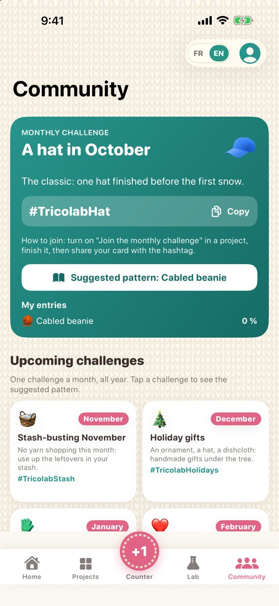

Knitting · crochet · scrapbook
The lab for your creations
A row counter built for busy hands, patterns that never lose your place and motifs you won't find anywhere else. Knitting and crochet, in English and French.
What Tricolab does
Hands-free counter
One very big + button, a screen that stays on, and your voice: say "next" or "back" without putting your needles down.
A pattern that keeps your place
Import a PDF, photograph a paper pattern or paste its text. Your current line is highlighted and abbreviations are explained in plain words.
30 original patterns
Five styles: Classic, Modern, Rustic, Emoticon and Crop circle. A drawing of the finished item, a measured schematic and sizes that recalculate the instructions.
Motif generator
20 chart motifs — crop circles, fishing, construction, leaves — in your size and colours, with the rows written out automatically.
The Lab
Step-by-step techniques, materials, chart examples, an abbreviation dictionary and calculators for gauge, sizing and yarn.
Share and stay motivated
A finished-project card to share, a monthly challenge, badges and your year in review.
Preview




Free, with one optional purchase
The hands-free counter, the pattern reader, 5 launch patterns, 3 crop circle motifs, the Lab, challenges and shareable cards are included. The one-time "Tricolab Complete" purchase (CA$4.99) unlocks the 25 other patterns and the 17 other motifs. No subscription.
Your data stays with you
No account, no ads, no trackers. Your projects, photos and patterns stay on your device. Read the privacy policy.
Ready to knit, crochet, create?
Tricolab is available on the App Store, for iPhone and iPad. Free, with one optional purchase.
Download on the App Store